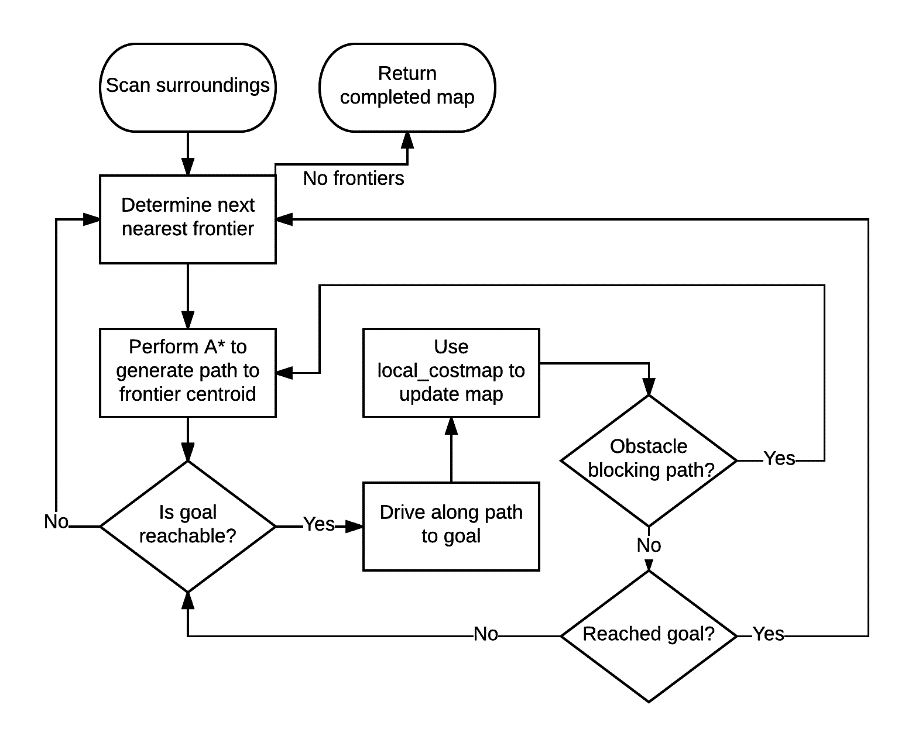

The final project for Unified Robotics IV was heavily code based. The end goal of the project was to program a turtlebot to fully navigate and map an unknown area. To do this we used a combination of predefined ROS nodes for the background processes along with our own node to run the system logic. Topics utilized included...
Occupancy grids
Breadth first search
Depth first search
A* search
Frontier generation
Localization
Mobile robot kinematics
ROS functionality
Program Layout Flowchart

A set of Python modules were written to govern the high level logic of the robot. These were used with preexisting ROS nodes to create a fully functioning mapping robot. A flowchart of the program logic is shown above. The robot also was programmed to display its current thought process - an example is shown below. In the picture, the red cells are expanded boundary locations, the yellow cells are frontiers, the green cell is the goal location, and the green line is the path to the goal. Ultimately our project was one of the few to actually complete mapping the area.